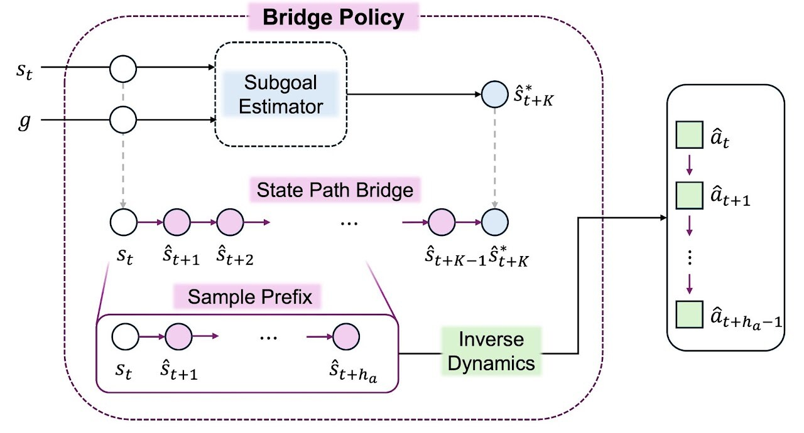

Offline Reinforcement Learning
Sequential Decision Making
Generative Models
PathBridger: Subgoal Bridges for Offline Goal-Conditioned Reinforcement Learning
Soohyun Choi*, Seonvin Cho*, Songnam Hong†
Preprint · *Equal contribution · †Corresponding author
-
Developed a hierarchical offline GCRL framework that connects subgoal selection
to short-horizon execution through state-space bridges
-
Combined generative endpoint proposals, transitive value-based selection, and
inverse-dynamics decoding to produce executable action chunks from offline
trajectories

Multi-step Proximal Policy Improvement in Offline Reinforcement Learning
Soohyun Choi*, Seonvin Cho*, Songnam Hong†
Preprint · *Equal contribution · †Corresponding author
-
Developed a geometric view of offline actor updates, interpreting a broad class
of behavior-anchored objectives as a single proximal policy improvement step
on a statistical manifold
-
Proposed MPI, a plug-in refinement that composes sequential re-centered
proximal steps and improves TD3+BC, ReBRAC, and IQL on many D4RL tasks
Ongoing Work
MART: Multi-Step Actor Refinement Trajectories
-
Developing a fixed-budget actor-refinement path that divides a nominal
improvement horizon across predecessor-centered actors
-
Separating critic-facing exposure from deployment reach to study how
refinement depth changes offline training stability
AMO: Adaptive Multiscale Policy Optimization
-
Studying adaptive proximal policy improvement that learns a total proximal
horizon T through a cross-fitted outer objective evaluated with a frozen
target critic
-
Training two independently anchored policies at coupled scales: a conservative
T/N-policy supplies Bellman-target actions, while a full-T policy is used
for execution and guides the adaptation of T
Extensions of PathBridger
-
Exploring offline-to-online learning and more flexible long-horizon
goal-conditioned control
-
Extending state-space planning and generative approaches to action-free settings,
where the data do not provide actions
Research Topics
Policy Optimization in Offline Reinforcement Learning
-
Treat behavior-regularized policy updates as proximal steps along a
critic-induced gradient flow
-
Use this view to reason about multi-step refinement under different policy
geometries and imperfect critic estimates
Generative Models for Sequential Decision Making
-
Study generative approaches to sequential decision making, including sequence
models, diffusion models, energy-based methods, and flow-based models
-
Use them for trajectory generation, planning, and long-horizon control